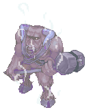
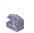
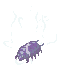
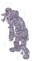
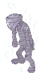
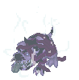
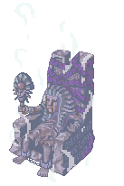

Nightmare Pyramid
| Requirements | |
|---|---|
| Base Level: | 100 |
| Starting Point: | moc_prydb1 103/54 |
| Items: | 5,000z |
| Rewards | |
| Experience: | 7,500,000 (base), 2,500,000 (job) |
| Items: | - |
| Others: | - |
Nightmare Pyramid is an extension to the regular Pyramid dungeon. It contains two floors, identical to the two Pyramid Basement floors, but contains stronger enemies, including the MVP Nightmare Amon Ra.
Location
- Warp to Pyramid. (Warper, Dungeons, Pyramids)
- Go to the center of the map, enter the warp.
- Walk to the south and talk with the Suspicious Cat.
/navi moc_prydb1 103/54 - Inside the dungeon, you can get two hunting quests from the Tomb-Raiding Cat.
Cards
| Name | Slot | Description | |
|---|---|---|---|

|
Nightmare Minorous | Weapon | Increase physical damage against Brute and Undead monster by 10%.
When equipped with equip compounded with Nightmare Arclouse card: Reduce damage from Brute and Undead monsters by 5%. Ignore 50% physical defense of Brute and Undead monsters. |
|
|
Nightmare Mimic | Weapon | Increase magical damage against Brute and Undead monster by 5%.
When equipped with equip compounded with Nightmare Arclouse card: Reduce damage from Brute and Undead monsters by 5%. Ignore 50% magic defense of Brute and Undead monsters. |
|
|
Nightmare Arclouse | Shield | Reduce damage from Brute and Undead monsters by 20%.
When equipped with equip compounded with Nightmare Mimic card: Reduce damage from Brute and Undead monsters by 5%. Ignore 50% magic defense of Brute and Undead monsters. When equipped with equip compounded with Nightmare Minotaur card: Reduce damage from Brute and Undead monsters by 5%. Ignore 50% physical defense of Brute and Undead monsters. |
|
|
Nightmare Ancient Mummy | Garment | Reduce damage from Neutral property by 15%.
Every refine of garment increase magical Fire damage by 3%. When equipped with equip compounded with Nightmare Mummy card: Reduce damage from Neutral property by 5%. Increase the probability of causing Sleep to all targets on 11x11 cells. |
|
|
Nightmare Mummy | Footwear | When physically and magically attacked, chance to cause Sleep to all targets on 11x11 cells.
When equipped with equip compounded with Nightmare Ancient Mummy card: Reduce damage from Neutral property by 5%. Increase the probability of causing Sleep to all targets on 11x11 cells. |
|
|
Nightmare Verit | Footwear | Increase magical damage inflicted by 5%.
When refined to +7, increase magical damage inflicted by 3%. When refined to +9, increase magical damage inflicted by 2%. |
|
|
Nightmare Amon Ra | Armor | Increase magic damage against Shadow and Undead property monsters by 50%.
Increase magic damage against Demon and Undead race monsters by 50%. |
Monsters
| Image | Name | Level | Race | Element | HP |
|---|---|---|---|---|---|
|  | Nightmare Minorous | 121 | Brute | Fire 2 | 27,141 |
|  | Nightmare Mimic | 137 | Formless | Neutral 3 | 63,101 |
|  | Nightmare Arclouse | 134 | Insect | Earth 2 | 48,013 |
|  | Nightmare Ancient Mummy | 141 | Undead | Undead 2 | 90,157 |
|  | Nightmare Mummy | 117 | Undead | Undead 2 | 22,557 |
|  | Nightmare Verit | 115 | Undead | Undead 1 | 21,034 |
|  | Nightmare Amon Ra
|
145 | Human | Earth 3 | 2,515,784 |